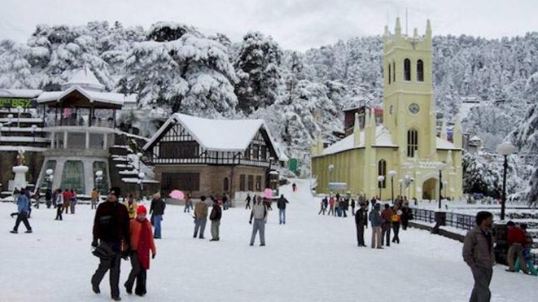

YATRIKA
NYATI
The best time to visit India depends on the kind of experience you are looking for. The diverse topography enjoys diverse weather conditions. If you would want to bask in summer then there are places with year-long tropical weather conditions. If snow, cold and soothing climate suits you then there are locales with winter weather, especially the lap of the Himalayas. Even the monsoon, heavy rains to soft pitter-patter is enjoyable and there are many amazing places to enjoy the bliss of rains. To put at ease your concerns of when to go in India, the country can only be properly explained as a year-round destination.

SHIMLA
A wonderful abode in the Himalayas, the city of Shimla is surrounded by scenic pine-covered hills and snow-capped peaks. Located in the magnificent hill state of Himachal Pradesh in India, it is one of the most popular tourist destinations in the country. From honeymooners to adventure seekers, the city serves as a charming retreat to a large number of people. The enchanting beauty of this hill station has attracted countless filmmakers and cinematographers. This erstwhile summer capital of the British, still retains its colonial-era charm through its spectacular historical churches and institutes, like Christ Church, Indian Institute of Advanced Study and many more. The majestic Himalayas have a certain allure that makes you forget all your worries. Walk along the charming Mall Road and fill your shopping bags with beautiful souvenirs. When you are exhausted with all the shopping, you can satiate your taste buds with hot, steaming local food. Revel in the picturesque views from the scenic Jakhoo Hill or explore your spiritual side at the ancient Jakhoo Temple. Indulge in the adrenaline-pumping activities such as skiing, bungee jumping and zip-lining at Kufri. Shimla gives its tourists the chance to discover the best of the Himalayas, completed by rich cultural heritage and enthralling attractions.
Packge cost:$500
HOME